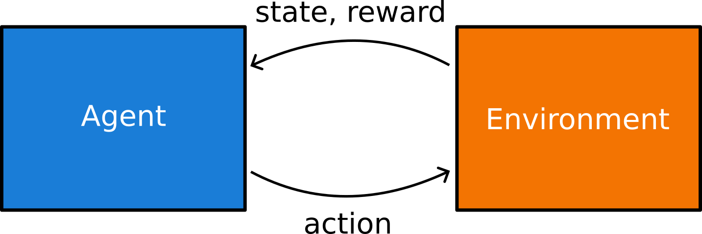
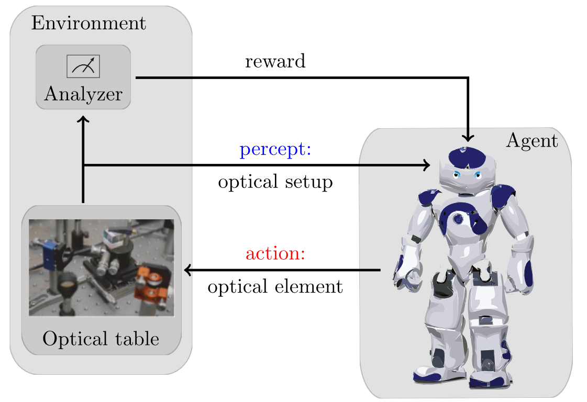

import numpy as np
class MAB:
''' Creates a multiarmed bandit where each bandit outputs a reward coming
from a Gaussian distribution. '''
def __init__(self, num_b):
self.N = num_b # Number of bandits
self.mean_r = np.random.normal(0, 1, self.N) # Reward probability of each bandit
def get_reward(self, action):
# Given action, outputs a reward based on the probability of success of bandit
if action > self.N-1:
print('Bandit number'+str(action)+' does not exists!')
return 0
else:
reward = np.random.normal(self.mean_r[action],1)
return reward
# To create the environment use:
number_bandits = 10
mab_environment = MAB(num_b = number_bandits)
# To do an action over the environment and get the reward use:
action = 1 # As we have 10 bandits, action must be a number between 0 and 9
reward = mab_environment.get_reward(action)Basics of RL
In previous lessons we have explored the world of supervised learning (i.e. our data samples \(x\) come with a label \(y\)). We also briefly talked about unsupervised learning and generative modelling, for which no labels are given. We will come back to this paradigm later. Now, we will explore a completely different paradigm: reinforcement learning. Here, rather than having a dataset, we consider an agent and an environment interacting over time (see Figure 1). The interaction occurs in a loop: at each step, the agent observes the current state of the environment, selects an action, which is then applied to the environment, changing its state. Aside from the state, the environment also outputs a reward that evaluates the immediate outcome of its decision. As we will see in detail below, the goal here is not to fit a function as before, but rather to wisely choose the actions that leadto the highest cumulative reward..

0.1 Examples
Before going in the details of the algorithm, it is useful to understand what can be done with RL.
0.1.1 Learning to navigate
The aim of the agent is to reach a certain target state through a simple or complex environment. The state of the agent is simply its position, its actions relate to its motion, and a positive reward is given when reaching the target.

0.1.2 Learning to control
Here the agent’s goal is control the environment to again reach a target state. For instance, the agent may have access to the control of different parts of the environment (its actions). A reward is given when the control is successful, i.e. we reach the target.

0.1.3 Learning to play
The same paradigm is easily applicable to games! Indeed, some of the biggest breakthroughs in RL came from its application to the game Go and later to chess. There is a very cool documentary about these developments in Youtube.
0.1.4 Learning to create quantum experiments
As you may already guess, RL has a lot of applications in Physics. For instance, an agent can learn to place different optical devices (its actions) into a quantum optical table to reach a certain quantum state!

1 Basic elements
All previous problems share almost the same elements. We have already talked about actions and states, and will come back to these a bit later. Aside of these, we identify four main subelements:
- Policy: ensemble of rules that set the behaviour of the agent.
- Reward signal: defines the goal in a RL problem.
- Value function: internal to the agent, specifies what is good on the long run.
- Model: optional, aims to mimic the behaviour of the environment.
2 Multi-armed bandits
Multi-armed bandits (MAB) is a common toy model in RL. The setup is as follows: we have a \(k\)-armed bandit, defining our \(k\) actions. Each arm has a given probability of returning a reward \(R=1\). From this probability, we have the expected reward of each arm, hence of each action. We typically refer to this as the value of each action, and define the value function
\[\begin{equation} q^*(a) = \mathbb{E}[ R_t | A_t = a], \end{equation}\]
where \(R_t\) and \(A_t\) refer to the reward recevied and action taken at time \(t\). Of course we don’t know \(q^*(a)\) a priori, but we can estimate it by means of interaction with the bandints (the environment). If we define our estimate as \(Q(a)\), our goal is to make \(Q(a)\rightarrow q^*(a)\). A simple way of doing that is as follows:
\[\begin{equation} Q_t(a) = \frac{\text{sum of rewards received when doing action } a}{\text{number of times we took action } a} = \frac{\sum_{i=1}^{t-1} R_i \delta (A_i -a)}{\sum_{i=1}^{t-1}\delta(A_i-a)} \end{equation}\]
From this value function, we can construct our policy, by for instance taking \(A_t = \text{argmax}_a Q_t(a)\). Rather than calculating this equation at each time step, we can rather update it incrementally as follows: \[\begin{equation} Q_{n+1}(a) = Q_n(a) + \frac{1}{n} (R_n(a) - Q_n(a)). \end{equation}\]
2.1 Non-stationary problems
We often want to consider non-stationary problems, where the value of each action may change over time. In this case, we can use a constant step-size parameter \(\alpha\) to update our value function: \[\begin{equation} Q_{n+1}(a) = Q_n(a) + \alpha (R_n(a) - Q_n(a)), \end{equation}\] where the factor \(\alpha\) determines how fast we want to adapt to changes in the environment: if \(\alpha\) is small, updates are conservative and rely heavily on past estimates. On the other hand, if \(\alpha\) is large (close to 1), the estimate rapidly adapts to the most recent reward.
2.2 Exploitation vs. exploration
The policy above “exploits” the learned knowledge. However, this may be counterproductive because the agent’s knowledge of the action values is not perfect. If the agent happens to find a good, but not optimal, action early on, a purely greedy policy will stick to it forever, never discovering the truly best action. To avoid this, the agent must also explore. It must sometimes try actions that it does not believe are the best. This allows it to improve its estimates of the values of all actions and increases the chances of finding the optimal one. This is the fundamental exploration-exploitation dilemma in reinforcement learning: the agent must balance exploiting its current knowledge to get high rewards with exploring to gain new knowledge that could lead to even higher rewards in the future.
To account for this, we consider the \(\epsilon\)-greedy policy, which consists in taking the action \(A_t = \text{argmax}_a Q_t(a)\) with probability \(1-\epsilon\), and a random action with probability \(\epsilon\). This simple modification allows the agent to explore the environment, while still exploiting its knowledge most of the time. More formally,
\[\begin{equation} \pi(a|t) = \begin{cases} 1-\epsilon + \frac{\epsilon}{k} & \text{if } a = \text{argmax}_a Q_t(a) \\[6pt] \frac{\epsilon}{k} & \text{otherwise} \end{cases} \end{equation}\]
Exercise
Let’s put the previous in practice! Here is a function implementing a multi-armed bandit environment. Complete the code to create an agent that uses the \(\epsilon\)-greedy policy to interact with the environment and learn the value function \(Q(a)\) for each action. Train your agent over \(2000\) episodes with three different epsilon values: [0, 0.01, 0.1]. Plot a time average of the reward over time for each epsilon value to see how exploration affects learning.
Bonus: Get the optimal action from the environment (the one with higher mean_r) and plot the percentage of times the agent selects this action over time for each epsilon value.